13 - Non-Functional Requirements and Test Strategy
13.1 Non-functional requirements
| ID | Category | Requirement | Measure | Phase |
|---|---|---|---|---|
| NFR-01 | Performance | API response for MVP reads/writes from Vietnam | p95 < 300 ms | 1 |
| NFR-02 | Performance | Schedule / night page load on 4G | LCP < 2.5 s | 1 |
| NFR-03 | Correctness | Points, race, cap and stats are computed only by Postgres functions | Server value always wins over the TS preview | 1 |
| NFR-04 | Concurrency | Two captains acting on one night at the same time | Server re-checks can_put_up(); no double put-up |
1 |
| NFR-05 | Availability | League nights (Mon–Fri 18:00–24:00 ICT) | 99.5% (MVP) → 99.9% (Phase 2) | 1–2 |
| NFR-06 | Security | Session cookies + CSRF; OWASP ASVS L2 baseline; PDPD | Pen-test before public launch | 1 |
| NFR-07 | Shared devices | No signed-in HTML or API data cached by the service worker | Verified by SW tests | 1 |
| NFR-08 | Usability | Phone-first; 44 px tap targets; no hard-coded copy | Lint and review | 1 |
| NFR-09 | Localization | en + vi; vi must contain every en key | Typecheck-enforced | 1 |
| NFR-10 | Auditability | Every SL change has a reason, author and time | skill_level_history |
1 |
| NFR-11 | Live scoring latency | Tap → local UI < 50 ms; server round-trip p95 < 200 ms | 2 | |
| NFR-12 | Offline | A full individual match can be scored offline and synced without loss | 2 | |
| NFR-13 | Scale | 200 concurrent team matches; 5k WebSocket viewers | k6 | 2 |
13.2 Test strategy

13.2.1 Rule tests (single source = Postgres)
| Suite | Where | Cases |
|---|---|---|
| Race chart | SQL test + rules.test.ts |
All 36 pairs; mirror symmetry; SL6v4 = 5/3 |
Points (fn_score_individual_match) |
SQL | 3–0 → 3/0; 4–3 both race 4 → 2/1 (hill); 4–1 loser race 3 → 2/0; 5–2 both race 5 → 2/0; games > race raises; both at race raises; loser race 2 with 1 game → 2/1 |
Snapshot (fn_snapshot_put_up) |
SQL | Fires once both sides are up; never overwrites; an SL change afterwards leaves the snapshot |
| Roll-up | SQL | Night totals equal the sum of 5 rows after insert, update and delete |
put_up_block_reason |
SQL | would_break_23 (reads skill_level_cap), already_put_up, not_on_roster, side_complete; can_put_up agrees on every row |
change_skill_level |
SQL | Rejects SL outside 2..7, a blank reason, an unknown player, a no-op; writes history with changed_by |
| Stats | SQL | players_stats recompute; player_division_stats shows zeros for unplayed players; team_standings counts only submitted |
| Mirror drift | Vitest | _parked/src/lib/rules.ts race chart and pointsFor equal the SQL cases above |
13.2.2 Backend
go test -race ./...in CI (Built).- Planned
internal/leagueintegration test withLEAGUE_TEST_DATABASE_URL, covering:- Reference data and joins.
- Put-up twice refused.
- Shutout rolls up to 3.
- Submit of an incomplete night refused.
- A player-role user gets 403 on writes.
- A captain of another team gets 403.
LIKEinput100%matched literally.
- Cookie/CSRF tests (Built
handlers_cookie_test.go).
13.2.3 Frontend
- Vitest + Testing Library + MSW only (never
vi.mockthe API); unhandled requests fail. - Built Coverage:
RequireAuth,OnboardingPage,lib/errors,lib/member-id. - When restoring parked screens: put-up block reasons, result steppers capped at race, verdict preview, submit drawer, admin SL change (reason required).
13.2.4 End-to-end (Target)
Playwright is not installed (it needs approval). The first scenario to automate:
- Admin and captain users are seeded.
- The captain signs in and opens the week-10 fixture.
- The captain puts up 5 players; the cap block appears for 03209.
- The captain enters 5 results and submits.
- Standings and roster MW/MP update.
- A player-role user can view but not act.
13.2.5 Integration gate before beta
The FE and BE have never been run together in a browser (plan.md status). Before the beta:
- Run them together locally and in production.
- Check the CORS preflight is absent on GETs.
- Check cookie scoping across
www.andbe.. - Check logout sends
X-CSRF-Token.
13.3 Definition of Done
- Rule changes are made in SQL and in the
rules.tsmirror in the same change set, with tests on both sides. - Swagger is regenerated (
make swagger) and the FE types are updated. - New error codes are added to the BE registry, the FE
ERROR_CODElist and both locales; shipped codes are never renumbered. - vi/en strings are added; no hard-coded copy.
- Repo conventions pass: BE
database.mdrules, FE lint (zero warnings), typecheck, tests. - Privileged actions are recorded (SL history now;
audit_login Phase 2).